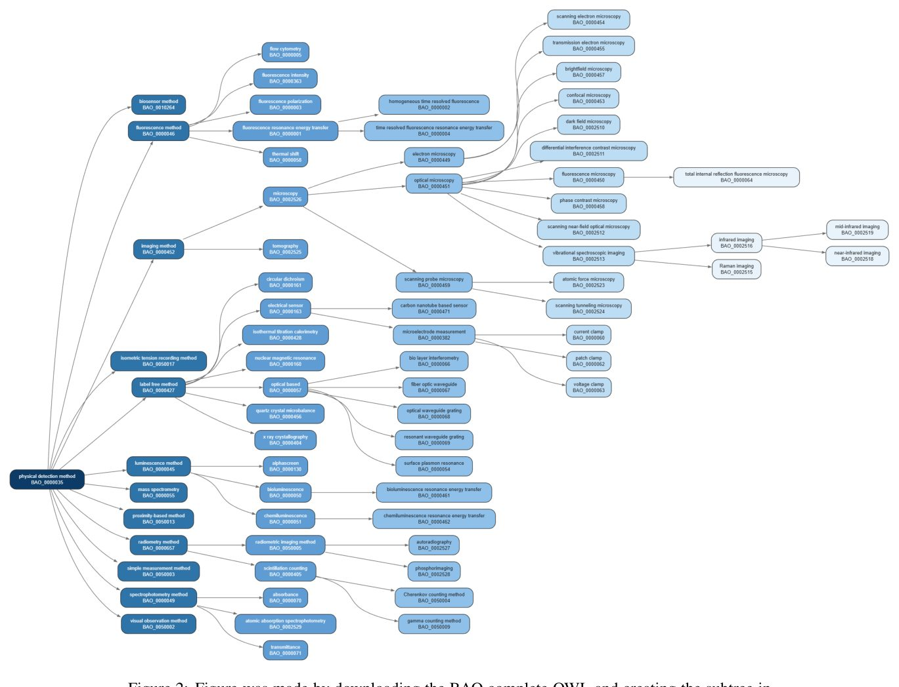
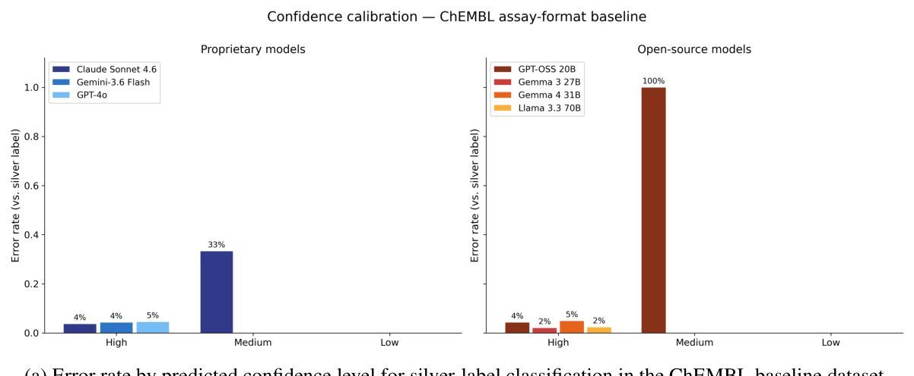
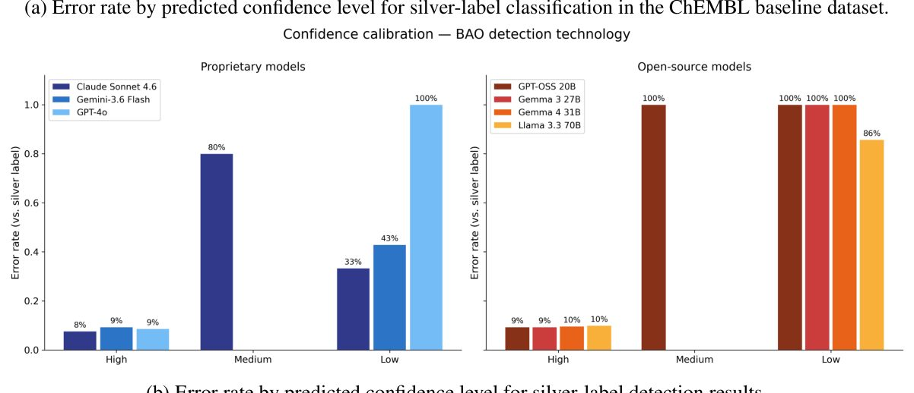

Нейрожелілер биологиялық деректер базасындағы хаосты реттей ала ма
 OWL файлын жүктеп алу және PowerPoint бағдарламасында тармақталған құрылымды жасау арқылы дайындалды.](../../media/2026-10-02/can-llms-reliably-annotate-bioassay-metadata-to-improve-data-f1.jpg)
PubChem сияқты ірі биологиялық деректер базалары миллиондаған тәжірибе жазбаларын қамтиды, бірақ олардың көпшілігінде құрылымдалған метадеректер жоқ. Стандартталған сипаттамалардың болмауы ғалымдарға әртүрлі зерттеу нәтижелерін салыстыруға және оларды нейрожелілерді оқыту үшін тиімді пайдалануға кедергі келтіреді. Авторлар жеті тілдік модельді сынақтан өткізіп, олардың тәжірибе хаттамаларын BAO онтологиясына сәйкес автоматты түрде жіктей алатынын тексерді.
Басты ойлар
- PubChem жазбаларының 99,9%-дан астамында BAO метадеректері жоқ.
- Тілдік модельдер талдау форматтарын жіктеуде 0,96-дан жоғары дәлдік көрсетеді.
- LLM қолданыстағы сараптамалық аннотациялардағы қателерді анықтауға қабілетті.
Толығырақ
Зерттеушілер PubChem-дегі 2 миллионға жуық биоталдауды талдап, деректердің жетіспеушілігін анықтады: 36% жазбада талдау форматы, ал 89%-ында биоталдау түрі көрсетілмеген. Бұл мәселені шешу үшін олар жеті түрлі тілдік модельді (LLM) пайдаланып, BioAssay Ontology (BAO) белгілерін автоматты түрде тағайындауды сынақтан өткізді. Нәтижелердің дәлдігін тексеру үшін ChEMBL базасындағы деректер эталон ретінде пайдаланылды.
Нәтижелер модельдердің талдау форматы мен анықтау әдісін белгілеуде жоғары дәлдікке (recall 0,96-дан жоғары) қол жеткізетінін көрсетті. Сапалық талдау барысында сарапшы-куратор жасанды интеллекттің қолданыстағы аннотациялардағы қателерді таба алатынын және кейде бастапқы деректерге қарағанда дәлірек жіктеу ұсынатынын растады. Ашық және жабық модельдер арасындағы тиімділік айырмашылығы аз болды, бұл автоматтандыруды кең ауқымды ғылыми міндеттер үшін қолжетімді етеді.
Шектеулер
Бұл жұмыс препринт болып табылады және сирек кездесетін талдау түрлерінде модельдердің дәлдігі төмендейді, сондықтан адам бақылауы қажет.
Мақаланың толық талдауы
Түйіндеме
Молекулалардың қасиеттерін болжауға арналған базалық модельдерді дамыту деректердің жоғары дайындығын, соның ішінде метадеректерді аннотациялаудың сенімділігін талап етеді. Қазіргі уақытта ашық репозиторийлер де, өнеркәсіптік скринингтік деректер базалары да биологиялық талдаулар (bioassays) аннотацияларының жоқтығы, қайшылығы немесе шатасуы мәселесіне тап болуда. Бұл жұмыста авторлар BioAssay Ontology (BAO) негізінде талдау форматы мен физикалық анықтау әдісі өрістері үшін PubChem базасындағы аннотациялардың жетіспеушілік ауқымын бағалады.
Түсіндірме
BioAssay Ontology (BAO) — биологиялық тәжірибелерді стандартталған түрде сипаттауға арналған жүйе, ол компьютерлерге талдау түрі мен шарттарын «түсінуге» мүмкіндік береді.
Талдау шамамен 2 миллион биоталдауды қамтитын PubChem базасында деректердің тапшылығы өте жоғары екенін көрсетті: 36% жағдайда талдау форматы, 89% жағдайда биоталдау түрі жоқ, ал жазбалардың 99,9%-дан астамында BAO бойынша формат немесе анықтау технологиясы терминдері мүлдем көрсетілмеген. Бұл метадеректерді курациялау процесін автоматтандыру қажеттілігін көрсетеді.
Осы мәселені шешу үшін зерттеушілер жеті түрлі тілдік модельдің (LLM), соның ішінде ашық және меншікті модельдердің, талдау мәтіндері негізінде аннотацияларды болжау және тексеру қабілетін зерттеді. Бағалау PubChem және ChEMBL деректер жиынтығы арқылы жүргізілді және модельдердің болжамдары қолданыстағы «күміс» белгілермен (бұрын автоматты түрде белгіленген аннотациялар) салыстырылды.
Маңызды
Модельдер биохимиялық және жасушалық талдау форматтарын анықтауда жоғары дәлдік (recall кемінде 0,96) көрсетті, анықтау технологиялары үшін де ұқсас нәтижелер тіркелді.
Модельдер мен бастапқы деректер арасындағы келіспеушіліктер сирек кездесетін сыныптар үшін артқанымен, қолмен тексеру көптеген сәйкессіздіктер модель қателерінен емес, бастапқы дереккөздердегі қайшылықтардан туындағанын көрсетті. Өнеркәсіптік сарапшы-куратордың қатысуымен өткен сапалық зерттеуде LLM келтірген дәлелдер маманға өз белгілерін қайта қарауға көмектескені анықталды, бұл модельдердің қате белгіленген деректерді анықтаудағы әлеуетін растайды. Меншікті және ашық модельдер арасындағы тиімділік айырмашылығы аз болып шықты. Нәтижелер LLM-дер талдау метадеректерін ауқымды аннотациялау және аудиттеуде көмектесе алатынын көрсетеді, алайда мұндай белгілерді машиналық оқыту конвейерлеріне енгізбес бұрын әр сынып үшін сенімділікті бағалау және адам тарапынан тексеру қажет.
Абайлаңыз
Зерттеу қолданыстағы деректер базаларымен салыстыруға негізделген; автоматтандырылған аннотациялар сарапшылық бақылауды талап етеді, өйткені модельдер оқу үлгілеріндегі қателерді мұрагерлік жолмен алуы мүмкін.
Кіріспе
FAIR қағидаттары және биоаналитикалық деректердегі мәселелер
FAIR қағидаттары (табылуы, қолжетімділігі, өзара үйлесімділігі, қайта пайдаланылуы) ғылыми деректерді ретке келтіруге бағытталған, алайда олардың жасанды интеллект (ЖИ) модельдері үшін дайындығы төмен күйінде қалуда. Негізгі мәселе ғылыми репозиторийлердегі толық емес, қайшылықты немесе қате метадеректер болып табылады. Биоаналитикалық (bioassay) жинақтар дәрі-дәрмек іздеудегі машиналық оқыту модельдері үшін іргелі дереккөз болып табылады, өйткені олар биологиялық жүйелердің заттарға реакциясын сипаттайды. PubChem базасында 100 миллионнан астам қосылыс пен 1 миллионнан астам талдау нәтижесі бар, бірақ көптеген жазбаларда эксперимент форматы немесе анықтау әдісі туралы құрылымдық метадеректер жоқ.
Маңызды
PubChem сияқты ірі деректер базаларында миллиондаған жазбалар құрылымдық метадеректерге ие емес, бұл оларды машиналық оқытуда тиімді пайдалануға кедергі келтіреді.
Түсініксіздік мәселесін шешу үшін BioAssay Ontology (BAO) әзірленді. Ол талдау сипаттамасын ортогональды осьтерге: биологиялық формат, физикалық анықтау әдісі, өлшенетін көрсеткіш және нысанаға бөледі. Бұл ұқсас форматтағы, бірақ әртүрлі анықтау әдістерін қолданатын талдауларды ажыратуға мүмкіндік береді. Алайда, PubChem-дегі «In vivo/Toxicity» немесе «Cell-based/RNAi» сияқты белгілер форматты, модальділікті және соңғы нүктені бір жолға біріктіреді, мұны миллиондаған жазба үшін қолмен түзету мүмкін емес. Авторлар бұл процесті автоматтандыру үшін үлкен тілдік модельдерді (LLM) пайдалануды ұсынады. Жұмыста 4 ашық және 3 жабық модель BAO бойынша формат пен анықтау әдістерін жіктеу тұрғысынан бағаланады.
Биоталдау онтологиясы (BioAssay Ontology, BAO)
BAO жоғары өнімді скрининг нәтижелерін еркін мәтіннен логикалық қатаң сипаттамаларға ауыстыру үшін жасалған. BAO моделі талдауларды биологиялық компонент, нысана, соңғы нүкте, формат және әдіс бойынша бөлуге бағытталған. Тұрақты жаңартуларға қарамастан — 2026 жылғы 6 мамырдағы v2.8.19 нұсқасы 7918 сыныпты қамтиды — барлық талдауларды қамту күрделі мәселе болып қалуда. Мысалы, 2014 жылы BAO ChEMBL-дегі барлық тасымалдаушы талдауларын жеткілікті түрде сипаттай алмады.
Түсіндірме
Онтология — бұл ұғымдар мен олардың арасындағы байланыстарды айқындайтын, компьютерлерге деректер құрылымын «түсінуге» мүмкіндік беретін ресімделген білім жүйесі.
Бұрын BAO-ны қолдану қолмен белгілеуді талап еткен. Vempati және басқалар 944 PubChem талдауын 20 BAO терминімен байланыстырып, терминологиялық түсініксіздікті азайтуға болатынын көрсетті. Өнеркәсіп те бұл тәсілді қолданады: AstraZeneca компаниясы 381 ішкі (2005–2013 жж.) және 233 PubChem талдауын түсіндіру үшін BAO-ны қолданды. Алайда, қолмен белгілеу миллиондаған биоанализдер үшін ауқымды емес.
Аннотацияланған ашық деректер репозиторийлері
Бұл жұмыста біз биоталдау аннотацияларының үш дереккөзін қолданамыз: PubChem, ChEMBL және BARD. PubChem — 2004 жылдан бері жинақталған жоғары өнімді скрининг пен медициналық химия деректерінің ең ірі жинағы. Жүктеп алу кезінде базада шамамен 1,9 миллион биоталдау (AID) бар. Алайда, метадеректердің сапасы біркелкі емес: олар көбінесе құрылымдалмаған мәтін түрінде болады. Бұл мәселені шешу үшін BARD жобасы NIH Molecular Libraries Program аясында PubChem жазбалары үшін BAO (BioAssay Ontology) аннотацияларының кураторлық жинағын жасады. Сарапшылар мәтіндік хаттамаларды BAO терминдерімен қолмен сәйкестендірді. BARD порталы жабылғанымен, 1000 талдау үшін 4477 аннотация PubChem-де қолжетімді. Олардың 997-сінде анықтау әдісі, 998-інде талдау форматы аннотацияланған.
Маңызды
BARD ең дәл, сарапшылар тексерген аннотацияларды ұсынады, ал PubChem мен ChEMBL ауқымдырақ, бірақ құрылымы аз немесе толық емес деректерді қамтиды.
ChEMBL — бұл ғылыми әдебиеттер мен ерікті жарналар негізінде қолмен курацияланатын биоактивтілік базасы, ол шамамен 2,0 миллион талдауды қамтиды. Стандарттауға қарамастан, жазбалардың шамамен 10%-ында формат көрсетілмеген, ал анықтау әдістерінің белгілері жиі жоқ немесе сенімсіз алгоритмдермен жасалған. Біз дереккөздерді сенімділігі бойынша реттейміз: BARD — эталон ретінде, ChEMBL — екінші дереккөз, ал PubChem-нің жергілікті метадеректері — ең аз сенімді дереккөз ретінде. LIT-PCBA, MF-PCBA немесе CAPRICHO сияқты қолданыстағы тәсілдер деректерді тазартуға немесе қателерді белгілеуге тырысады, бірақ олар кілт сөздер мен бар өрістерді пайдаланумен шектелген, бұл LLM арқылы автоматтандырудың қажеттілігін көрсетеді.
Тілдік модельдер көмегімен биоталдауларды курациялау
LLM биомедициналық жазбалардан метадеректерді алуда жоғары тиімділік көрсетуде. Мысалы, LLaMA негізіндегі модельдер ChIP-seq параметрлерін немесе жасушалық желілер мен генетикалық өзгерістер туралы деректерді сәтті бөліп алады және дәстүрлі сәйкестендіру әдістерінен басым түседі. Талдау форматтарын аннотациялау саласында аталған нысандарды анықтау (NER) және онтологиялармен байланыстыру (text2term) әдістері қолданылады.
Түсіндірме
LLM (Large Language Models) — мәтінді түсіну және жасау қабілеті бар нейрондық желілер, бұл контексте тәжірибелердің бейресми сипаттамаларын құрылымдау үшін қолданылады.
Абайлаңыз
LLM-ді пайдалану стандартты емес белгілерді жасау қаупімен байланысты, сондықтан заманауи әдістер модель нәтижесін ресми онтологияларға байланыстыру кезеңдерін қамтиды.
RELATE сияқты қолданыстағы тәсілдер LLM жауаптарын онтология терминдеріне байланыстыру үшін «іздеу-содан соң-промпт» жүйелерін пайдаланады, бұл жарамсыз белгілердің пайда болу қаупін азайтады. Қазіргі уақытта мұндай стратегиялар еркін мәтін негізінде BAO белгілерін (формат, анықтау, нысана) сенімді және біркелкі тағайындай алатыны зерттелмеген және біздің жұмысымыз осы олқылықты толтыруға бағытталған.
Нәтижелер
Үлкен тілдік модельдер (LLM) негізіндегі аудит жұмыс процесі
Алдыңғы бөлімде анықталған метадеректердің жетіспеушілігін, гетерогенділігін және қайшылықтарын ескере отырып, біз биоталдау метадеректерін белгілеуде LLM қолдану мүмкіндігін бағаладық. Модель болжамдары PubChem, ChEMBL және BARD базаларынан алынған қолданыстағы аннотациялармен (біз оларды «күміс» белгілер деп атаймыз) салыстырылды. Бұл дереккөздердің өзі толық емес немесе қате болуы мүмкін болғандықтан, ұсынылған классификация метрикаларын дәлдіктің түпкілікті көрсеткіші деп санауға болмайды. Осы шектеулерді бақылау үшін біз деректердің шағын бөлігін қолмен тексердік.
Түсіндірме
Коэн каппасы (Cohen’s κ) — екі бағалаушы арасындағы келісім дәрежесін өлшейтін статистикалық көрсеткіш; 1 толық сәйкестікті, 0 кездейсоқ сәйкестікті білдіреді.
«Күміс» дереккөздерге қатысты сенімділік
Біз LLM-дердің өзара келісімін Коэн каппасы арқылы бағаладық. ChEMBL талдау форматы жиынтығында барлық жеті LLM жоғары келісімді (κ > 0,9) көрсетті, BAO тапсырмаларында да ұқсас нәтижелер алынды. PubChem-BAO шағын жиынтығында келісім төмендеді, бірақ әлі де жоғары (κ > 0,8), тек Gemma 3 27B моделі басқалардан төмен нәтиже көрсетті. Көпшілік дауыс беру әдісінде LLM-дер 96% жағдайда ChEMBL белгілерімен сәйкес келді. «Жасушалық» және «биохимиялық» форматтар тұрақты түрде жақсы классификацияланды (recall ≥ 96%). «Ағзаға негізделген» форматта көрсеткіштер әртүрлі болды: Gemma 3 27B ең жоғары дәлдікті (precision) көрсетті, бірақ ең аз болжам жасады. Бұл сынып үшін recall 87% және precision 77% құрады.
Маңызды
LLM модельдері жоғары келісім (κ > 0,8–0,9) және 96%-ға дейінгі дәлдікті көрсетті, алайда сирек кездесетін деректер сыныптарында тиімділік төмендейді.
«Жасушасыз» және «тіндік» форматтар үшін дәлдік пен толықтық айтарлықтай төмен болды (әр сыныпта ең көп дегенде бір дұрыс болжам). Алайда, қолмен тексеру 8 жағдайдың 7-уінде BARD белгісі ChEMBL-ден өзгеше екенін және LLM-дер BARD-пен сәйкес келгенін немесе сарапшы модельдің дұрыстығын растағанын көрсетті. Біз LLM-дердің ChEMBL-мен сәйкес келмеген 43 жағдайын талдадық (2-кесте). 17 жағдайда (59%) LLM консенсусы ChEMBL-ге қарағанда қатаң тексеруден өтетін BARD белгілерімен сәйкес келді. ChEMBL және BARD сәйкес келіп, модельдер сәйкес келмеген жағдайларда, LLM-дердің өзара келіспеушілігі толық емес еді, бұл модельдерді «құрылымдық пікірталасқа» шақыру арқылы жауаптарды нақтылау мүмкіндігін көрсетеді.
Абайлаңыз
«Күміс» белгілерді эталон ретінде пайдалану олардың ықтимал қателігіне байланысты шектеулі; LLM болжамдары мен деректер базалары арасындағы корреляция модельдердің қатесіздігін дәлелдемейді.
Сарапшылық бағалау
Біз 17 талдау (AID) бойынша сарапшылар мен үлкен тілдік модельдер (LLM) консенсусы арасындағы қайшылықтарды зерттеу үшін қосымша талдау жүргіздік. Таңдамаға ChEMBL және PubChem BARD белгілері сәйкес келіп, LLM шешімі өзгеше болған жағдайлар; LLM BARD-пен сәйкес келіп, ChEMBL-мен сәйкес келмеген төрт жағдай; сондай-ақ LLM ешбір дереккөзбен сәйкес келмеген жағдайлар енгізілді. Сарапшыларға LLM үшін берілген барлық ақпарат: атауы, сипаттамасы, түсініктемесі және хаттамасы ұсынылды.
Түсіндірме
BAO (BioAssay Ontology) — бұл биологиялық талдауларды стандартталған жіктеу жүйесі, ол дәрілік заттарды зерттеу әдістерін реттеуге көмектеседі.
Сарапшылар тапсырманың күрделілігін атап өтті. 6 жағдайда олар LLM қорытындысымен бірден келісті, тағы 6 жағдайда модельдердің дәлелдерін көргеннен кейін келісті. 4 қосымша жағдайда сарапшылар LLM жіктеуін негізді деп тапты (3 жағдайда дәлелдерді зерттегеннен кейін), бірақ нақты белгі бере алмады. Бұл кейбір талдаулар бірнеше санатқа сәйкес келуі немесе нақты жіктеу үшін жеткілікті ақпарат болмауы мүмкін екенін көрсетеді.
Маңызды
Кейбір жағдайларда LLM сарапшыларға BAO анықтамаларына назар аудармау салдарынан туындаған қателерді түзетуге көмектесті, алайда модельдер де жасушалық желілерді тұтас организмдермен шатастырып, қателіктер жіберді.
Мысалы, AID 2695 үшін сарапшы бастапқыда талдауды «жасушалық» деп белгілеген, бірақ LLM дәлелдерін қарап шыққаннан кейін, BAO ережелеріне сәйкес бір жасушалы организмдер «организм» форматына жататынын мойындады. AID 588769 жағдайында модельдер PubChem белгілеуіндегі қатені анықтады. Алайда, AID 504631 үшін сарапшы ChEMBL белгісін дұрыс деп тапты, өйткені LLM дәлелдерді дұрыс ажыратқанымен, тірі организмді қате түрде жасушалық желі деп жіктеген. PubChem деректерімен салыстыру (3-кесте) LLM көбінесе тәуелсіз PubChem аннотацияларына қарағанда BARD-пен көбірек сәйкес келетінін көрсетті, бұл деректер базасында «шынайы» белгілеу бойынша бірыңғай стандарттың жоқтығын білдіреді.
Талқылау және қорытынды
Біздің аудит PubChem-нің жаппай жүктелетін деректерінде метадеректердің толық еместігін көрсетті: жазбалардың шамамен 36%-ында талдау форматы көрсетілмеген және 0,1%-дан азында BAO (BioAssay Ontology) құрылымдық аннотациясы бар. Сондай-ақ, біз ресурстар арасындағы айтарлықтай келіспеушіліктерді байқадық: BARD және ChEMBL формат белгілері бар 236 талдаудың 10%-ында деректер сәйкес келмеген. Бұл олқылықтар метадеректер өрістерінің міндетті еместігімен және PubChem-нің «Assay Format» өрісінің BAO иерархиясына қарағанда шектеулі сөздік қорымен байланысты.
Бұл мәселені шешу үшін біз жеті LLM (меншікті және ашық бастапқы кодты) моделін бағаладық. Олар бір-бірімен жоғары деңгейде келісіп, талдау форматының кластарын 0,96-дан жоғары recall (толықтық) көрсеткішімен қалпына келтірді. LLM жауаптары «күміс» (silver) белгілермен сәйкес келмеген жағдайларды қолмен тексеру, қателіктердің көбінесе дереккөздер арасындағы қайшылықтарға немесе қате таңбалауға байланысты екенін көрсетті. LLM-дердің көпшілігі ChEMBL-мен келіспеген жағдайлардың үштен бірінен астамында олар шын мәнінде PubChem/BARD белгісімен сәйкес келген, ал біздің бас кураторымыз модель келтірген дәлелдерді көргеннен кейін өз шешімдерін қайта қараған.
Маңызды
LLM талдау форматтарын жіктеуде жоғары дәлдік (recall > 0,96) көрсетеді және қолмен курациялауға қарағанда әлдеқайда арзан әрі тиімді құрал бола алады.
Түсіндірме
«Күміс» белгілер — бұл автоматтандырылған әдістермен немесе қолданыстағы базалардан алынған, оқыту үшін сапалы деп саналатын, бірақ эталондық (алтын стандарт) болып табылмайтын деректер.
Меншікті және ашық модельдер арасындағы айырмашылықтар аз болды, бұл ашық модельдерді ауқымды аннотациялау үшін қолайлы нұсқаға айналдырады. 1000 жазбаны аудиттеу құны $3–9 құрайды, бұл қолмен қайта тексеруден әлдеқайда арзан. Біз LLM-дердің аннотациялау процесінде маңызды рөл атқаратынын болжаймыз: олар қайшылықты жазбаларды белгілейді, мәтіндік дәлелдерді шығарады және күмәнді жағдайларды адам-кураторларға бағыттайды. Дегенмен, зерттеудің шектеулері бар: «күміс» белгілер тек ішінара сенімді, сондықтан есептелген recall қолданыстағы курациямен келісімді білдіреді, абсолютті ақиқатты емес. Сондай-ақ, бағалау BAO-ның бірінші деңгейінде жүргізілді және PUG JSON API шектеулері таңдама көлемін шектеді.
Сапалы валидация да бір ғана сарапшының пікірімен шектелген. Біз қателіктердің бір түрін анықтадық: AID 504631 үшін модельдер дұрыс дәлелдерді келтірген (Plasmodium falciparum бір жасушалы ағза екендігі), бірақ талдауды ағзаға негізделген емес, жасушаға негізделген деп қате жіктеген. Бұл адам тарапынан таңдамалы тексерудің қажеттілігін көрсетеді. Процесс BAO онтологиясындағы олқылықтарды да ашты: «биосенсор» үшін анықтаманың жоқтығы және «қарапайым өлшеу» мен «визуалды бақылау» әдістерінің анық еместігі. Болашақта біз BAO гранулярлығын тереңдетуді және LLM көмегімен «күміс» белгілердегі қайшылықтарды шешуді жоспарлап отырмыз.
Кесте 1. ChEMBL базалық моделі үшін сынып бойынша recall/дәлдік (талдау форматы)
| Модель | Acc. | mF1 | mF1top3 | организмге негізделген (n=784) | тінге негізделген (n=252) | жасушасыз (n=53) | (n=6) | (n=2) |
|---|---|---|---|---|---|---|---|---|
| Claude Sonnet | 4.6 | 0.963 | 0.560 | 0.934 | 0.98 / 0.99 | 0.96 / 0.98 | 0.88 / 0.83 | 0.00 / – 0.00 / 0.00 |
| Gemini 3.6 Flash | 0.957 | 0.578 | 0.919 | 0.97 / 0.99 | 0.96 / 0.97 | 0.94 / 0.71 | 0.00 / – | 0.50 / 0.08 |
| GPT-4o | 0.954 | 0.551 | 0.919 | 0.96 / 0.99 | 0.96 / 0.97 | 0.91 / 0.74 | 0.00 / – | 0.00 / 0.00 |
| GPT-OSS 20B | 0.956 | 0.602 | 0.908 | 0.97 / 0.98 | 0.96 / 0.97 | 0.77 / 0.79 | 0.17 / 1.00 | 0.00 / 0.00 |
| Gemma 3 27B | 0.979 | 0.576 | 0.960 | 0.99 / 0.98 | 0.99 / 0.97 | 0.85 / 0.98 | 0.00 / – | 0.00 / 0.00 |
| Gemma 4 31B | 0.951 | 0.545 | 0.909 | 0.96 / 0.99 | 0.96 / 0.97 | 0.91 / 0.70 | 0.00 / – | 0.00 / 0.00 |
| Llama 3.3 70B | 0.976 | 0.572 | 0.954 | 0.99 / 0.98 | 0.99 / 0.98 | 0.85 / 0.94 | 0.00 / – | 0.00 / 0.00 |
| Majority vote | 0.961 | 0.553 | 0.921 | 0.97 / 0.98 | 0.97 / 0.97 | 0.87 / 0.77 | 0.00 / – | 0.00 / 0.00 |
Мәндер R/P ретінде көрсетілген; қолдау (ntrue) тақырыптағы әр баған үшін бір рет көрсетілген. Ең аз қолдау көрсетілетін екі сынып (тіндерге негізделген және жасушасыз, n<10) сенімді жиынтық көрсеткіштер үшін тым кішкентай. Дұрыс емес болжамдар осы көрсеткіштерден алынып тасталды. Болжамдар болмаған кезде дәлдік «–» ретінде көрсетілген.
Кесте 12. ChEMBL BAO талдау форматы белгісімен LLM-дердің көпшілігі келіспеген 43 талдауды қолмен тексеру
| ID | ChEMBL | BARD (егер өзгеше) | Түсініктеме | ndis | nal |
|---|---|---|---|---|---|
| 2096 | cell-based | cell-based | organism-based | ChEMBL and BARD agree; LLMs disagree | 4 3 |
| 2695 | cell-based | cell-based | organism-based | ChEMBL and BARD agree; LLMs disagree | 4 3 |
| 492959 | cell-based | cell-based | organism-based | ChEMBL and BARD agree; LLMs disagree | 4 3 |
| 651893 | cell-based | cell-based | organism-based | ChEMBL and BARD agree; LLMs disagree | 4 3 |
| 504494 | biochemical | cell-based | cell-free | LLMs disagree with both ChEMBL and BARD | 5 2 |
| 463208 | biochemical | cell-based | cell-free (6 att.) | LLMs disagree with both ChEMBL and BARD | 4 2 |
Барлық белгілер — BAO талдау форматтары; орынды үнемдеу үшін «format» жұрнағы түсіріп қалдырылған. ndis — ChEMBL-мен келіспейтін модельдер саны, nal — ChEMBL-мен келісетін модельдер саны; басқаша көрсетілмесе, әр жол үшін жеті модель пайдаланылды. Сұр түспен белгіленген жолдар аға өнеркәсіптік куратордың тексеруіне жіберілді (13-кесте).
Кесте 2. LLM-дердің көпшілігі ChEMBL BAO талдау форматы белгісімен келіспеген 43 ChEMBL талдауын санаттау
| Келіспеушілік үлгісі | Саны | % | Тексеруге жіберілген |
|---|---|---|---|
| LLMs support the BARD label against ChEMBL | 623968 | spectrophotometry / fluorescence method / quantitative reverse transcription PCR (this is not a physical detection method but an assay supporting method) | – 3/3 (6 att.) |
| ChEMBL and BARD agree and LLMs disagree with both | 588778 | fluorescence / spectrophotometry / (no other) | – 5/2 |
| ChEMBL and BARD disagree and LLMs disagree with both (novel prediction) | 602418 | luminescence / fluorescence / (no other) | – 3/0 |
| No BARD label available; ChEMBL-only ground truth | 588816 | fluorescence / simple measurement method / (no other) | – 3/1 (6 att.) |
| 602170 | spectrophotometry / visual observation method / (no other) | – 3/1 | |
| 624103 | fluorescence / simple measurement method / (no other) | – 3/2 (6 att.) |
Аға өнеркәсіптік куратордың тексеруіне жіберілген келіспеушілік үлгілерінің саны мен пайызы көрсетілген (13-кесте).
Кесте 15. PubChem жаппай жүктеуіндегі үшінші тарап BAO белгісімен модельдердің көпшілігі келіспеген 34 физикалық анықтау әдісі талдауларын қолмен тексеру
| AID | BAO белгісі (үшінші тарап) | Көпшілік болжамы | Биоталдау аннотациясы (PubChem) | Түсініктеме | nmaj./nal. |
|---|---|---|---|---|---|
| 624135 | fluorescence | simple measurement method | (no other) | – | 3/2 (6 att.) |
| 624334 | fluorescence | visual observation method | (no other) | – | 2/0 (6 att.) |
Барлық белгілер BAO физикалық анықтау әдістеріне жатады; орынды үнемдеу үшін «method» жұрнағы алынып тасталды. nmaj. — көпшілік болжамын қолдайтын модельдер саны; nal. — үшінші тарап BAO белгісімен сәйкес келетін болжамдар саны. Басқаша көрсетілмесе, әр жол үшін 7 модель сыналды. Сұр түспен белгіленген жолдарды аға өнеркәсіптік куратор қосымша тексерді.
Әдістер
Деректер жинағын құру
LLM модельдерінің биоталдау метадеректерінің сыныптарын болжау қабілетін бағалау үшін PubChem BioAssay деректері негізінде жинақ құрылды. Жалпы 1 994 310 AID жазбасынан 1 770 568-і іріктелді. Жетіспейтін өрістерді толтыру үшін PUG REST API қолданылды. Деректер ChEMBL 37 базасымен салыстырылды. Қорытынды жинаққа ChEMBL бойынша 1097 талдау, тек PubChem бойынша 226 талдау және физикалық анықтау әдістері бойынша 308 талдау енгізілді. Белгілер BAO иерархиясына сәйкес жіктелді (Сурет SN 1, 2). Бастапқы аннотацияларда қайшылықтар болғандықтан, олар «күміс белгілер» (silver labels) деп аталады және модель жауаптарымен келісімді тексеру үшін қолданылады.
Түсіндірме
«Күміс белгілер» — бұл қолданыстағы дерекқорлардан алынған, сарапшылар толық тексермеген және қателіктері болуы мүмкін деректер.
Тапсырма анықтамасы және қолданылған LLM
Модельдер талдау форматын немесе физикалық анықтау әдісін тақырып, сипаттама және хаттама негізінде болжауы керек. API арқылы GPT-4o, Gemini 3.6 Flash, Claude Sonnet 4.6 және Ollama v0.17.4 арқылы Gemma 4 31B, GPT-OSS 20B, Qwen 3.5, Llama 3.3 70B модельдері қолданылды. Промпттардың әсерін бағалау үшін 500 талдаудан тұратын стратификацияланған іріктеме алынды. Жергілікті модельдерде белгілер сөздігін шектеу үшін JSON-Schema параметрі қолданылды.
PubChem BioAssay метадеректеріндегі олқылықтар мен сәйкессіздіктер
1 994 310 жазбаның тек 89%-ында атауы, сипаттамасы және түсініктемесі бар, ал 10%-дан азында ғана бірегей сипаттама бар. Метадеректердің төрт санатын (формат, BAO форматы, BAO анықтау технологиясы, BioAssay түрі) талдау жоғары гетерогенділікті көрсетті. «BioAssay түрі» өрісі формат, әдіснама және түпкілікті нүктелерді араластырғандықтан жіктеуге жарамсыз деп табылды (Кесте SN 9). PubChem сөздігінің шектеулілігі (тек 3 санат) BAO иерархиясымен салыстырғанда қателіктерге әкеледі. Ішкі сәйкессіздіктер анықталды: мысалы, AID 1885 веб-интерфейсте «жасушалық», ал жүктеп алынған файлда «жасушалық/организмдік» деп көрсетілген. 236 талдаудың 24-інде (10,2%) BARD және ChEMBL белгілері арасында қайшылық байқалды. Сонымен қатар, жазбалардың 36%-ында формат туралы деректер жоқ, ал 0,1%-дан азында ғана BAO аннотациялары бар.








Суреттің толық сипаттамасы
7-сурет: ChEMBL талдау форматтарының ішкі жиыны үшін меншікті LLM болжамдарына екі промпт пертурбациясының әсері. BAO анықтамаларын алып тастау (Without defs) сыныптар ретін өзгертуге (Order swap) қарағанда әлдеқайда көп болжамдарды өзгертеді, әсіресе Gemini 3.6 Flash үшін бұл айырмашылық айтарлықтай жоғары (10,8%). Баған сегменттері әрбір өзгерген болжамның басқа белгіден «күміс» белгіге (жасыл), «күміс» белгіден басқа белгіге (қызыл) немесе «күміс» белгіден өзгеше екі белгі арасында (қызғылт сары) ауысқанын көрсетеді; әр бағанның үстіндегі пайыздық көрсеткіштер өзгерген болжамдардың жалпы үлесін білдіреді.
Зерттеу сызбасы
Препринт әлі рецензиядан өтпеген. Қорытындылар алдын ала.
Дереккөз
| Дереккөз | Санат | Препринт лицензиясы |
|---|---|---|
| arXiv | other | arxiv |
Дереккөздер
| Дереккөз | Сілтеме |
|---|---|
| Страница препринта | arxiv.org |
| Полный текст (PDF) | arxiv.org |
| DOI | doi.org |
| Метаданные Crossref | api.crossref.org |
| Europe PMC | europepmc.org |
| Иллюстрация | commons.wikimedia.org |